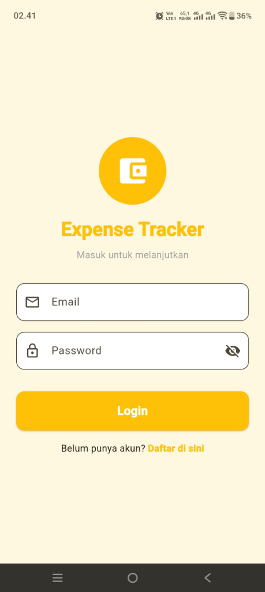
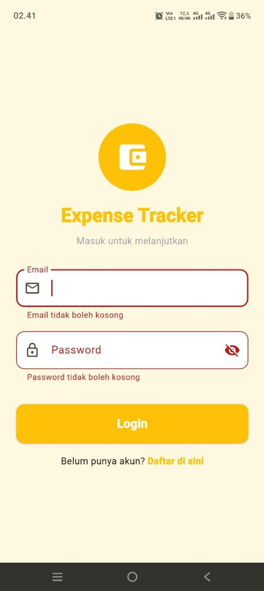
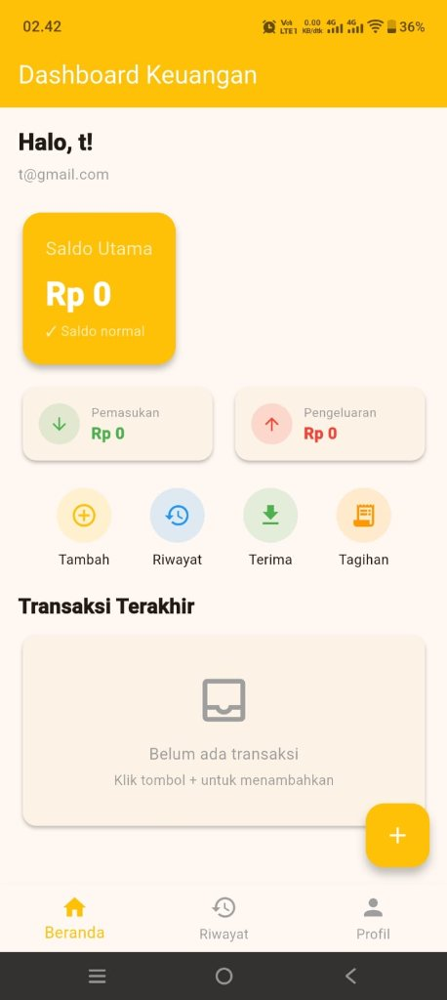
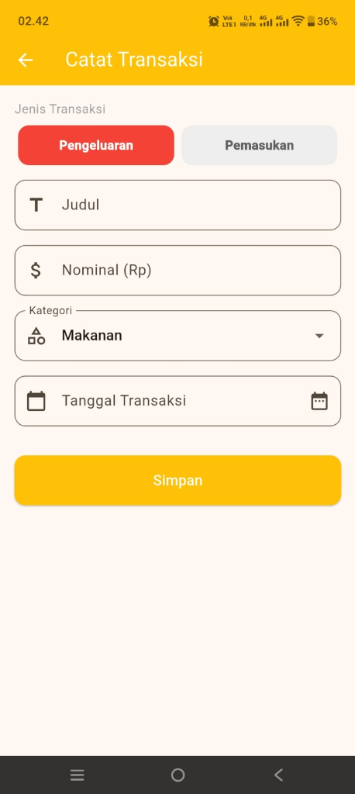
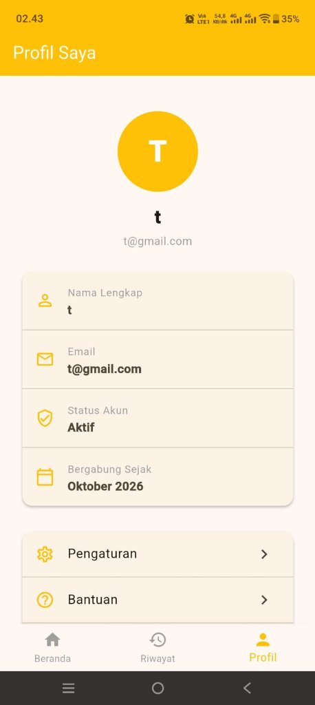
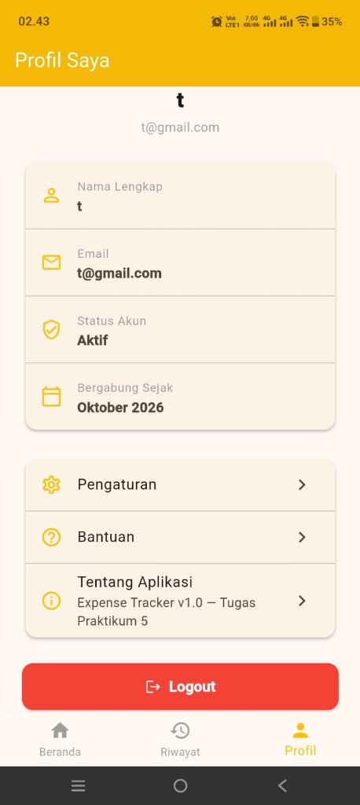

MODUL V: E-Wallet & Expense Tracker
NIM: 2411533019 - Adila Bintang Fauzi
Perkembangan teknologi mobile memungkinkan berbagai aktivitas sehari-hari dilakukan melalui perangkat smartphone, termasuk pengelolaan keuangan pribadi. Pencatatan pemasukan dan pengeluaran secara manual memiliki risiko kesalahan pencatatan serta menyulitkan pengguna dalam memantau kondisi keuangan secara berkala.
Berdasarkan permasalahan tersebut, dikembangkan aplikasi E-Wallet & Expense Tracker yang bertujuan membantu pengguna mencatat transaksi keuangan, memantau saldo, dan melihat riwayat transaksi melalui antarmuka yang mudah digunakan.
Aplikasi ini dikembangkan menggunakan Flutter sebagai framework antarmuka dan SQLite sebagai basis data lokal. Selain itu, validasi input diterapkan untuk mengurangi risiko masuknya data kosong, salah format, atau tidak sesuai ketentuan ke dalam sistem.
Tujuan pengembangan aplikasi ini adalah:
Basis data digunakan untuk menyimpan informasi yang diperlukan oleh aplikasi. Salah satu tabel utama yang digunakan adalah tabel transaksi.
Contoh struktur tabel transaksi:
await db.execute('''
CREATE TABLE transactions (
id INTEGER PRIMARY KEY AUTOINCREMENT,
title TEXT NOT NULL,
amount REAL NOT NULL,
category TEXT NOT NULL,
type TEXT NOT NULL,
date TEXT NOT NULL
)
''');Penjelasan kode:
id merupakan identitas unik setiap transaksi dan bertambah secara otomatis.title menyimpan nama atau deskripsi transaksi.amount menyimpan nominal transaksi.category menyimpan kategori transaksi.type membedakan transaksi pemasukan dan pengeluaran.date menyimpan tanggal transaksi.
Klausa NOT NULL digunakan untuk mencegah kolom terkait menyimpan nilai NULL. Namun, klausa ini tidak otomatis menolak teks kosong atau nominal nol. Oleh karena itu, validasi tambahan tetap diperlukan.
Hasil yang diharapkan: tabel transaksi dapat digunakan sebagai tempat penyimpanan catatan keuangan yang kemudian dibaca oleh halaman Dashboard dan Riwayat.
*Catatan: struktur tabel harus disesuaikan dengan database yang benar-benar digunakan pada project.*
Fitur registrasi digunakan untuk menerima informasi pengguna baru, sedangkan fitur login digunakan untuk memverifikasi identitas pengguna sebelum mengakses halaman utama. Salah satu bagian penting dalam proses registrasi adalah validasi input.
Tampilan halaman Login aplikasi Expense Tracker:

Gambar 1. Halaman Login (kondisi awal)

Gambar 2. Validasi login — email & password tidak boleh kosong
Halaman Login menampilkan form input email dan password. Ketika pengguna menekan tombol Login tanpa mengisi kolom yang wajib, sistem menampilkan pesan kesalahan di bawah masing-masing kolom secara langsung (inline validation), yaitu "Email tidak boleh kosong" dan "Password tidak boleh kosong".
Contoh kode validasi:
String? validateRegistration({
required String email,
required String password,
required String confirmPassword,
}) {
if (email.trim().isEmpty ||
!email.contains('@')) {
return 'Email tidak valid.';
}
if (password.isEmpty) {
return 'Password wajib diisi.';
}
if (password != confirmPassword) {
return 'Konfirmasi password tidak sesuai.';
}
return null;
}Penjelasan kode:
@.null.Validasi tersebut merupakan pemeriksaan awal di sisi aplikasi. Validasi email masih sederhana dan dapat diperketat sesuai kebutuhan. Setelah data dinyatakan valid, aplikasi dapat melanjutkan proses registrasi dan menyimpan data akun melalui mekanisme autentikasi yang digunakan.
Untuk keamanan, password tidak seharusnya disimpan sebagai teks biasa. Penyimpanan akun perlu menggunakan mekanisme hashing yang sesuai dan proses autentikasi yang benar.
Dashboard merupakan halaman utama yang menampilkan ringkasan kondisi keuangan pengguna, meliputi saldo, total pemasukan, dan total pengeluaran.

Gambar 3. Dashboard Keuangan — menampilkan saldo utama, ringkasan pemasukan & pengeluaran, dan navigasi fitur
Tampilan Dashboard menampilkan kartu Saldo Utama beserta keterangan saldo normal, ringkasan total Pemasukan dan Pengeluaran, serta tombol aksi cepat: Tambah, Riwayat, Terima, dan Tagihan. Di bagian bawah ditampilkan area Transaksi Terakhir yang akan memperlihatkan daftar transaksi terbaru. Navigasi bawah (bottom navigation) menyediakan akses ke halaman Beranda, Riwayat, dan Profil.
Perhitungan saldo secara konseptual dapat dilakukan menggunakan fungsi berikut:
double calculateBalance({
required double income,
required double expense,
}) {
return income - expense;
}Contoh penggunaan:
final balance = calculateBalance(
income: 5000000,
expense: 50000,
);Hasil perhitungan adalah Rp4.950.000, dengan asumsi saldo awal nol dan tidak terdapat transaksi lain.
Penjelasan kode:
Fungsi calculateBalance menerima dua parameter, yaitu total pemasukan dan total pengeluaran. Selanjutnya, fungsi mengurangi pemasukan dengan pengeluaran untuk memperoleh saldo bersih.
Pada aplikasi yang sebenarnya, nilai pemasukan dan pengeluaran sebaiknya diperoleh dari hasil pengolahan data transaksi di database agar saldo selalu sesuai dengan catatan yang tersedia.
Penambahan transaksi merupakan bagian dari operasi Create pada konsep CRUD (Create, Read, Update, Delete). Sebelum data disimpan, aplikasi perlu memvalidasi judul, nominal, kategori, dan jenis transaksi.

Gambar 4. Form Catat Transaksi — toggle Pengeluaran/Pemasukan, Judul, Nominal, Kategori, dan Tanggal
Form pencatatan transaksi menyediakan toggle untuk memilih jenis transaksi (Pengeluaran atau Pemasukan), kolom Judul, Nominal, pilihan Kategori, serta Tanggal. Validasi input diterapkan untuk memastikan semua kolom wajib telah diisi sebelum data disimpan ke database SQLite.
Contoh fungsi validasi transaksi:
String? validateTransaction({
required String title,
required double? amount,
required String category,
required String type,
}) {
if (title.trim().isEmpty) {
return 'Judul wajib diisi.';
}
if (amount == null ||
!amount.isFinite ||
amount <= 0) {
return 'Nominal harus lebih besar dari nol.';
}
if (category.trim().isEmpty) {
return 'Kategori wajib dipilih.';
}
if (type != 'Pemasukan' &&
type != 'Pengeluaran') {
return 'Jenis transaksi tidak valid.';
}
return null;
}Penjelasan kode:
Validasi dilakukan untuk memastikan judul tidak kosong, nominal merupakan angka yang valid dan lebih besar dari nol, kategori telah dipilih, serta jenis transaksi sesuai pilihan yang diizinkan. Jika input tidak valid, aplikasi harus menampilkan pesan kesalahan dan menghentikan proses penyimpanan. Jika input valid, proses dapat dilanjutkan.
Contoh penyimpanan transaksi menggunakan SQLite:
await db.insert('transactions', {
'title': titleController.text.trim(),
'amount': amount,
'category': selectedCategory,
'type': selectedType,
'date': DateTime.now().toIso8601String(),
});
Kode tersebut memasukkan data transaksi ke tabel transactions. Penyimpanan ini hanya dilakukan setelah validasi berhasil dan variabel seperti db, amount, titleController, selectedCategory, serta selectedType telah disiapkan dalam program.
Validasi di sisi aplikasi membantu mengurangi kesalahan input. Untuk menjaga integritas data, database juga dapat menggunakan batasan tambahan seperti CHECK pada kolom nominal dan jenis transaksi.
Halaman Riwayat digunakan untuk menampilkan transaksi yang telah tersimpan. Pengguna dapat menyaring data berdasarkan jenis transaksi.
Contoh kode pengambilan data pemasukan:
final transactions = await db.query(
'transactions',
where: 'type = ?',
whereArgs: ['Pemasukan'],
orderBy: 'date DESC',
);Penjelasan kode:
db.query() digunakan untuk mengambil data dari tabel.where menentukan kondisi penyaringan.whereArgs memasukkan nilai parameter untuk kondisi tersebut.orderBy: 'date DESC' mengurutkan data berdasarkan tanggal secara menurun.
Pada contoh ini, hanya transaksi dengan tipe Pemasukan yang diambil. Untuk menampilkan pengeluaran, parameter filter dapat diganti menjadi Pengeluaran. Jika pengguna memilih Semua, kondisi penyaringan dapat dihilangkan. Dengan fitur ini, pengguna dapat meninjau aktivitas keuangan berdasarkan jenis transaksi secara lebih terstruktur.
Halaman Profil digunakan untuk menampilkan informasi pengguna yang sedang aktif. Informasi yang ditampilkan dapat berupa nama dan email sesuai data akun atau sesi login.

Gambar 5. Halaman Profil — info pengguna, menu Pengaturan & Bantuan

Gambar 6. Profil — bagian Tentang Aplikasi dan tombol Logout
Halaman Profil menampilkan kartu informasi pengguna (nama dan email akun yang sedang login). Di bawahnya terdapat menu navigasi: Pengaturan untuk preferensi aplikasi, Bantuan untuk panduan penggunaan, dan Tentang Aplikasi yang menampilkan informasi aplikasi beserta pengembang. Tombol Logout (berwarna merah) tersedia di bagian bawah halaman untuk mengakhiri sesi pengguna.
Menu Bantuan & FAQ menyediakan informasi mengenai penggunaan aplikasi, sedangkan menu Tentang Aplikasi menampilkan informasi mengenai aplikasi dan pengembang.
Fitur logout digunakan untuk mengakhiri sesi pengguna dan mengarahkan pengguna kembali ke halaman login. Proses logout harus benar-benar membersihkan status autentikasi yang digunakan aplikasi.
*Catatan: Implementasi setiap fitur tersebut perlu disesuaikan dengan kode yang tersedia dalam project.*
Pengujian dilakukan untuk memastikan sistem dapat mengenali input yang tidak memenuhi ketentuan.
| No. | Skenario Pengujian | Hasil yang Diharapkan |
|---|---|---|
| 1 | Email kosong | Sistem menampilkan pesan kesalahan |
| 2 | Email tidak sesuai format | Registrasi ditolak |
| 3 | Password kosong | Sistem menampilkan pesan kesalahan |
| 4 | Konfirmasi password berbeda | Registrasi ditolak |
| 5 | Judul transaksi kosong | Transaksi tidak disimpan |
| 6 | Nominal bukan angka | Sistem menolak input |
| 7 | Nominal nol atau negatif | Transaksi tidak disimpan |
| 8 | Kategori belum dipilih | Sistem menampilkan pesan kesalahan |
| 9 | Data transaksi valid | Transaksi dapat diproses untuk disimpan |
*Hasil aktual setiap pengujian harus dicatat setelah aplikasi benar-benar dijalankan.*
| No. | Fitur | Hasil yang Diharapkan |
|---|---|---|
| 1 | Registrasi | Akun dapat dibuat dengan input valid |
| 2 | Login | Pengguna dapat masuk menggunakan kredensial yang benar |
| 3 | Tambah transaksi | Data transaksi tersimpan |
| 4 | Perhitungan saldo | Saldo sesuai total pemasukan dikurangi pengeluaran |
| 5 | Riwayat transaksi | Data yang tersimpan dapat ditampilkan |
| 6 | Filter transaksi | Data tampil sesuai jenis yang dipilih |
| 7 | Detail transaksi | Informasi transaksi dapat diperiksa |
| 8 | Logout | Sesi berakhir dan pengguna kembali ke halaman login |
*Tabel tersebut merupakan rencana pengujian. Status berhasil atau gagal perlu diisi berdasarkan hasil pengujian aktual, bukan diasumsikan berhasil.*
Aplikasi E-Wallet & Expense Tracker merupakan aplikasi manajemen keuangan berbasis mobile yang dikembangkan menggunakan Flutter dan SQLite sesuai rancangan implementasinya.
Aplikasi dirancang untuk membantu pengguna mencatat pemasukan dan pengeluaran, menghitung saldo, serta melihat riwayat transaksi. Penerapan database lokal memungkinkan data transaksi disimpan dan diakses kembali sesuai mekanisme penyimpanan yang digunakan.
Selain pengelolaan data, validasi input merupakan bagian penting dalam menjaga kualitas data. Pemeriksaan terhadap format email, kecocokan password, judul transaksi, nominal, kategori, dan jenis transaksi membantu mencegah data yang tidak sesuai ketentuan diproses lebih lanjut.
Melalui praktikum ini, konsep pengembangan antarmuka mobile, pengolahan data menggunakan SQLite, dan validasi input dapat dipelajari melalui implementasi aplikasi yang berorientasi pada kebutuhan pengguna.
Pengembangan selanjutnya dapat mencakup peningkatan keamanan autentikasi, pengujian yang lebih menyeluruh, serta penyempurnaan fitur transaksi dan pengaturan berdasarkan kebutuhan pengguna.